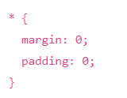
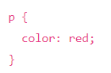
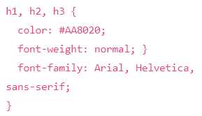

¿Que es CSS?
Son las siglas en inglés para "Hojas de Estilo en Cascada
Es un lenguaje que maneja el diseño y presentación de las páginas web, es decir, cómo lucen cuando un visitante las visita.
Funciona junto al lenguaje HTML, que se encarga del contenido básico de las páginas
Con este, puedes crear reglas para decirle a tu sitio web cómo quieres mostrar la información y puedes guardar los comandos para elementos de estilo
(como fuentes, colores, tamaños, etc.) separados de los que configuran el contenido
Santos, D. (2021, 10 febrero)

Selectores Basicos
Selector de Tipo: Selecciona todos los elementos que coinciden con el nombre del elemento especificado. Sintaxis: input
Selector de Clase: Selecciona todos los elementos que tienen el atributo de "class" especificado. Sintaxis: .input
Selector de ID: Selecciona un elemento basándose en el valor de su atributo "id" (esto para un elemento único). Sintaxis: #input
Selector de Universal: Selecciona todos los elementos del documento (Se puede limitar la zona de selección) Sintaxis: *
Selector de Atributo: Selecciona un elemento basándose en un atributo especifico Sintaxis: [atributo]
Sintaxis
Selector universal: Se utiliza para seleccionar todos los elementos de la página y se indica mediante un asterisco (*).
No se utiliza habitualmente, ya que es difícil que un mismo estilo se pueda aplicar a todos los elementos de una página.

Selector de tipo: Selecciona todos los elementos de la página cuya etiqueta HTML coincide con el valor del selector.
El siguiente ejemplo selecciona todos los párrafos de la página.

Selector de Etiqueta: CSS permite agrupar reglas que aplican a diferentes etiquetas en una sola regla con un selector múltiple.
Para ello, se incluyen todos los selectores separados por una coma (,).
